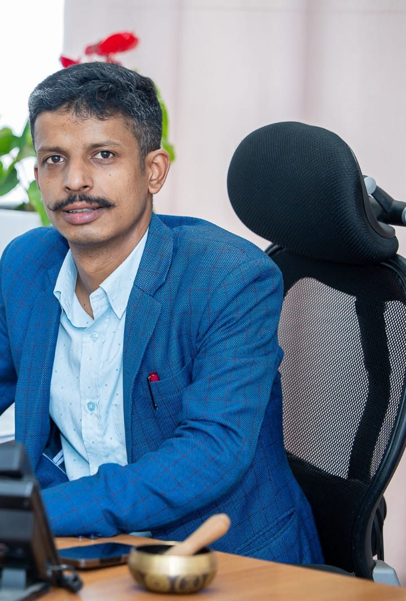

Press coordination
Running a press desk for high-profile public leaders, from access requests to coverage of official events.
Career
A career that moved from reporting the news to coordinating how public leaders communicate it.
Office of the Prime Minister & Council of Ministers, Government of Nepal
Appointed in Chaitra 2082 (March 2026) to facilitate communication between Prime Minister Balendra Shah and the media, at a level equivalent to a section officer in the Prime Minister's personal secretariat.
Kathmandu Metropolitan City
Led press coordination and media management for then-Mayor Balendra Shah, working from within the Mayor's Secretariat on the city's communication with journalists and the public.
Nepal Live · Nepalwatch · Ukeraa · Baahrakhari · Ekagaj · Routine of Nepal Banda
Reported for a range of national digital outlets, with an emphasis on investigative reporting. Held press accreditation through Nepal Live Publication, and has also contributed as a correspondent for Farak Dhar.
Bylines across Nepal’s newsrooms
Expertise
Running a press desk for high-profile public leaders, from access requests to coverage of official events.
Building stories from records, interviews and field visits, and checking every claim before it runs.
Clear, fast writing for digital audiences in Nepali media.
Shaping public messages that are accurate, concise and easy for citizens to act on.
Working relationships with journalists and editors across Nepal's national and digital outlets.
Hands-on experience of how municipal and federal offices communicate.

Newsrooms
Experience across Nepal's digital news landscape, from general news portals to investigative and current-affairs sites.
Media requests, speaking invitations and professional enquiries are welcome.